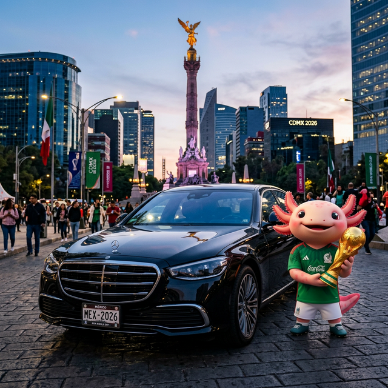

Placas Conmemorativas del Mundial 2026
¡No te quedes fuera de la historia! Gestionamos tus placas oficiales del Mundial en CDMX, EdoMex y Morelos de forma rápida y sin filas.
Tramitar mis Placas Ahora💔 El Dolor: ¿Te vas a perder la edición histórica por culpa de la burocracia?
Sabemos que quieres que tu auto luzca increíble para el Mundial 2026, pero el proceso oficial puede ser una pesadilla: citas inexistentes, horas perdidas en oficinas, documentos rechazados y la frustración de ver cómo otros ya lucen sus placas mientras tú sigues esperando.
✨ La Respuesta: Tu auto mundialista, listo en tiempo récord
Nosotros eliminamos el dolor del proceso. Como gestores expertos y partners estratégicos, nos encargamos de todo. Tú solo nos envías tu documentación por WhatsApp y nosotros te entregamos tus placas físicas y tarjeta de circulación. ¡Sin filas, sin estrés, 100% legal!
Requisitos para las Placas del Mundial
- Identificación Oficial: INE o Pasaporte vigente.
- Documento de Propiedad: Factura original o carta factura.
- Comprobante de Domicilio: No mayor a 3 meses.
- Baja de Placas: Si ya tienes placas, nosotros tramitamos la baja.
- Verificación: Debe estar al corriente (si aplica).
- Pago de Derechos: Nosotros gestionamos el pago oficial.
Vive la pasión del 2026
México será el epicentro del fútbol mundial. Asegura tu lugar en la historia con las placas oficiales. Atendemos CDMX, Estado de México y Morelos.
